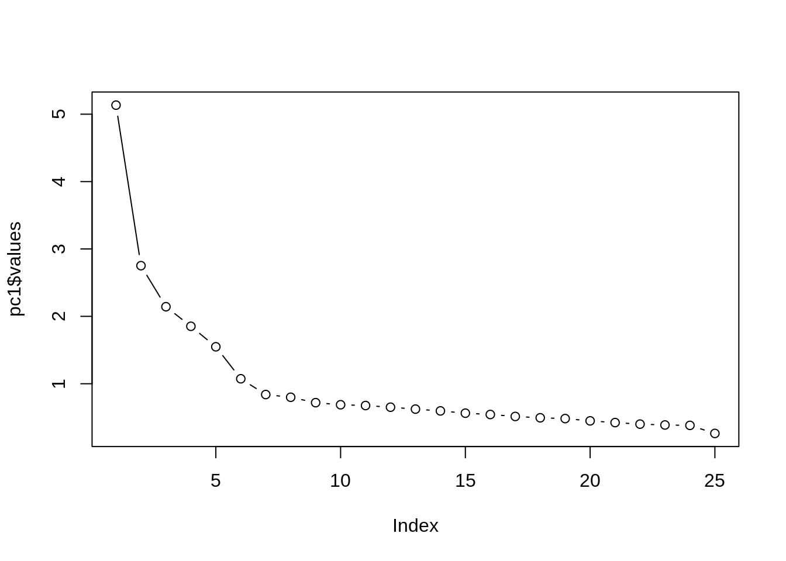

Lesson objectives
- Learn how to apply and interpret multivariate statistics for a variety of data
- Understand the difference between MANOVA and univariate statistical techniques
- Learn how to use eigenvalues and scree plots to determine factors in principal components analysis
- Understand how to interpret the results of PCA
Lesson outline
- Principal Components Analysis (50-60 min)
- MANOVA (50 min)
library(car)
library(psych)
library(multcomp)
library(tidyverse)
download.file("http://www.lindsaycoome.com/jellfish.csv", "jellyfish.csv")
jellyfish <- read_csv("jellyfish.csv")
jellyfish <- jellyfish %>%
# uses dplyr function to change all character vectors to factors
mutate_if(is.character, as.factor)Over the past few weeks, we have seen how the general linear model (GLM) can be used to detect group differences on a single dependent variable (e.g. t-tests, linear regression, ANOVAs, mixed-effects models). However, there may be circumstances in which we are interested in several dependent variables, and in these cases the simple ANOVA model is inadequate. Instead, we can use an extension of this technique known as multivariate analysis of variance (or MANOVA). MANOVA can be thought of as ANOVA for situations in which there are several dependent variables. The principles of ANOVA extend to MANOVA in that we can use MANOVA when there is only one independent variable or when there are several, we can look at interactions between independent variables, and we can even do contrasts to see which groups differ from each other. ANOVA can be used only in situations in which there is one dependent variable (or outcome) and so is known as a univariate test (univariate quite obviously means ‘one variable’); MANOVA is designed to look at several dependent variables (outcomes) simultaneously and so is a multivariate test (multivariate means ‘many variables’).
If we have collected data about several dependent variables then we could simply conduct a separate ANOVA for each dependent variable (and if you read research articles you’ll find that it is not unusual for researchers to do this). The reason why MANOVA is used instead of multiple ANOVAs is this: the more tests we conduct on the same data, the more we inflate the familywise error rate. The more dependent variables we have measured, the more ANOVAs we would need to conduct and the greater the chance of making a Type I error.
However, there are other reasons for preferring MANOVA to several ANOVAs. For one thing, there is important additional information that is gained from a MANOVA. If separate ANOVAs are conducted on each dependent variable, then any relationship between dependent variables is ignored. As such, we lose information about any correlations that might exist between the dependent variables. MANOVA, by including all dependent variables in the same analysis, takes account of the relationship between outcome variables. Related to this point, ANOVA can tell us only whether groups differ along a single dimension, whereas MANOVA has the power to detect whether groups differ along a combination of dimensions. For example, ANOVA tells us how scores on a single dependent variable distinguish groups of measurements (so, for example, we might be able to distinguish animals who are aquatic, semi-aquatic, terrestrial, etc).
For the univariate F-test (e.g., ANOVA) we calculated the ratio of systematic variance to unsystematic variance for a single dependent variable. In MANOVA, the test statistic is derived by comparing the ratio of systematic to unsystematic variance for several dependent variables.
To sum up, the test statistic in both ANOVA and MANOVA represents the ratio of the effect of the systematic variance to the unsystematic variance; in ANOVA these variances are single values, but in MANOVA each is a matrix containing many variances and covariances.
A caveat: it is not a good idea to lump all of your dependent variables together in a MANOVA unless you have a good theoretical or empirical basis for doing so. In our example, we will try to examine the outcome variables of Jellyfish width and length by the location the specimen was found.
## # A tibble: 6 x 3
## Location Width Length
## <fct> <dbl> <dbl>
## 1 D 6 9
## 2 D 6.5 8
## 3 D 6.5 9
## 4 D 7 9
## 5 D 7 10
## 6 D 7 11## Factor w/ 3 levels "D","M","S": 1 1 1 1 1 1 1 1 1 1 ...##
## Descriptive statistics by group
## group: D
## vars n mean sd median trimmed mad min max range skew kurtosis se
## X1 1 22 10.18 3.29 9.5 10.03 3.71 6 16 10 0.39 -1.39 0.7
## --------------------------------------------------------
## group: M
## vars n mean sd median trimmed mad min max range skew kurtosis
## X1 1 13 12.19 3.49 13 12.36 2.97 6 16.5 10.5 -0.43 -1.25
## se
## X1 0.97
## --------------------------------------------------------
## group: S
## vars n mean sd median trimmed mad min max range skew kurtosis se
## X1 1 24 16.23 2.19 16 16.18 1.48 12 21 9 0.32 -0.52 0.45##
## Descriptive statistics by group
## group: D
## vars n mean sd median trimmed mad min max range skew kurtosis se
## X1 1 22 12.34 3.01 12 12.19 2.97 8 19 11 0.41 -0.99 0.64
## --------------------------------------------------------
## group: M
## vars n mean sd median trimmed mad min max range skew kurtosis
## X1 1 13 15.65 4.24 16.5 15.86 5.19 8 21 13 -0.39 -1.4
## se
## X1 1.18
## --------------------------------------------------------
## group: S
## vars n mean sd median trimmed mad min max range skew kurtosis se
## X1 1 24 18.98 1.94 19 19.07 1.48 14 22 8 -0.56 -0.08 0.4To create a MANOVA model we use the manova() function, which is just the lm() function in disguise. The function takes exactly the same form as aov()and has the general form:
So, as with univariate regression/ANOVA, we specify a model in the function of the form ‘outcome ~ predictor(s)’. In the case of MANOVA there are several outcomes, so the model becomes ‘outcomes ~ predictor(s)’. To put multiple outcomes into the model, we have to bind the variables together into a single entity using the cbind() function. In the current example, we want to combine jellyfish length and width, so we can create a single outcome object by executing:
This command creates an object called outcome, which contains the length and width variables of the jellyfish dataframe pasted together in columns. We use this new object as the outcome in our model, and specify any predictors as we have previously. Therefore, for this example, we could estimate the model by executing:
To see the output of the model we use the summary command; by default, R produces Pillai’s trace (which is a sensible choice), but we can see the other test statistics by including the test = option. For example, to see the Wilks and Hotelling test statistics in addition we would need to execute:
## Df Pillai approx F num Df den Df Pr(>F)
## (Intercept) 1 0.96943 872.10 2 55 < 2.2e-16 ***
## Location 2 0.57007 11.16 4 112 1.173e-07 ***
## Residuals 56
## ---
## Signif. codes: 0 '***' 0.001 '**' 0.01 '*' 0.05 '.' 0.1 ' ' 1## Df Wilks approx F num Df den Df Pr(>F)
## (Intercept) 1 0.03057 872.10 2 55 < 2.2e-16 ***
## Location 2 0.44679 13.64 4 110 4.592e-09 ***
## Residuals 56
## ---
## Signif. codes: 0 '***' 0.001 '**' 0.01 '*' 0.05 '.' 0.1 ' ' 1## Df Hotelling-Lawley approx F num Df den Df Pr(>F)
## (Intercept) 1 31.713 872.10 2 55 < 2.2e-16 ***
## Location 2 1.200 16.21 4 108 2.003e-10 ***
## Residuals 56
## ---
## Signif. codes: 0 '***' 0.001 '**' 0.01 '*' 0.05 '.' 0.1 ' ' 1At any rate, it appears as though location does significantly predict our outcome variables.
As with other times we have used the lm() function, or some variant of it, R will, by default, produce Type I sums of squares but it is usually preferable in (M)ANOVA to look at Type II or Type III sums of squares. When you have one predictor in the model, as we have in the current example, Type I, II and III sums of squares will give the same results so it doesn’t matter (this is also true for univariate models). However, with two or more predictors in the model you might prefer Type III sums of squares because it does not depend upon the order in which you enter variables into the model. In which case we can use the Anova() function from the car package, as we have in previous lectures, to obtain these sums of squares. In the current example, having created a model, newModel, we could display the Type III sums of squares by executing:
##
## Type III MANOVA Tests: Pillai test statistic
## Df test stat approx F num Df den Df Pr(>F)
## (Intercept) 1 0.87834 198.548 2 55 < 2.2e-16 ***
## Location 2 0.57007 11.163 4 112 1.173e-07 ***
## ---
## Signif. codes: 0 '***' 0.001 '**' 0.01 '*' 0.05 '.' 0.1 ' ' 1## Response 1 :
## Df Sum Sq Mean Sq F value Pr(>F)
## Location 2 433.04 216.522 25.128 1.627e-08 ***
## Residuals 56 482.53 8.617
## ---
## Signif. codes: 0 '***' 0.001 '**' 0.01 '*' 0.05 '.' 0.1 ' ' 1
##
## Response 2 :
## Df Sum Sq Mean Sq F value Pr(>F)
## Location 2 506.04 253.018 28.821 2.479e-09 ***
## Residuals 56 491.63 8.779
## ---
## Signif. codes: 0 '***' 0.001 '**' 0.01 '*' 0.05 '.' 0.1 ' ' 1The important parts of this table are the columns labelled F value and Pr(>F) in which the F-ratios for each univariate ANOVA and their significance values are listed. The values associated with the univariate ANOVAs conducted after the MANOVA are identical to those obtained if one-way ANOVA was conducted on each dependent variable. This fact illustrates that MANOVA offers only hypothetical protection of inflated Type I error rates: there is no real-life adjustment made to the values obtained.
The multivariate test, on the other hand, takes account of the correlation between dependent variables, and so it has more power to detect group differences. With this knowledge in mind, the univariate tests are not particularly useful for interpretation, because the groups differ along a combination of the dependent variables. To see how the dependent variables interact we need to carry out a discriminant function analysis. However, we can start by looking at individual contrasts:
widthModel<-lm(Width ~ Location, data = jellyfish)
lengthModel<-lm(Length ~ Location, data = jellyfish)The first command creates a model, widthModel, based on predicting the variable width from location (Width ~ Location) and the second command does much the same but predicting length. We can ask for contrasts comparing each group to each other using a Tukey correction with our multcomp package.
postHocs<-glht(widthModel, linfct = mcp(Location = "Tukey"))
summary(postHocs) #summary function gives results of multiple comparisons##
## Simultaneous Tests for General Linear Hypotheses
##
## Multiple Comparisons of Means: Tukey Contrasts
##
##
## Fit: lm(formula = Width ~ Location, data = jellyfish)
##
## Linear Hypotheses:
## Estimate Std. Error t value Pr(>|t|)
## M - D == 0 2.0105 1.0269 1.958 0.131424
## S - D == 0 6.0473 0.8664 6.980 < 1e-04 ***
## S - M == 0 4.0369 1.0109 3.993 0.000502 ***
## ---
## Signif. codes: 0 '***' 0.001 '**' 0.01 '*' 0.05 '.' 0.1 ' ' 1
## (Adjusted p values reported -- single-step method)##
## Simultaneous Tests for General Linear Hypotheses
##
## Multiple Comparisons of Means: Tukey Contrasts
##
##
## Fit: lm(formula = Length ~ Location, data = jellyfish)
##
## Linear Hypotheses:
## Estimate Std. Error t value Pr(>|t|)
## M - D == 0 3.3129 1.0365 3.196 0.00620 **
## S - D == 0 6.6383 0.8746 7.590 < 0.001 ***
## S - M == 0 3.3253 1.0203 3.259 0.00535 **
## ---
## Signif. codes: 0 '***' 0.001 '**' 0.01 '*' 0.05 '.' 0.1 ' ' 1
## (Adjusted p values reported -- single-step method)A significant MANOVA could be followed up using either univariate ANOVA and post hoc tests or discriminant analysis (sometimes called discriminant function analysis or DFA for short). In our example, the univariate ANOVAs were not a useful way of looking at what the multivariate test showed because the relationship between dependent variables is obviously having an effect. Discriminant analysis is a good way to analyze this. Discriminant analysis is often used alongside clustering techniques and principal components analysis. For today, we are going to move on to principcal components anlysis (PCA), a very powerful tool for finding hidden or latent groups within your data.
Factor analysis is a method of determining whether a group of variables are related in such a way that they define a fewser number of subgroups or clusters. Variables within a cluster would all be highly intercorrelated (positively and negatively), whereas variables from different clusters would not be correlated.
The clusters would then be evaluated to try to determine what the common factor underlying those variables is (e.g. a common cause, perhaps). Although the clustering of the variables is empirically determined by factor analysis, the determination of those factors underlying the clusters is mostly subjective, as we shall see.
There are many different types of factor analysis, such as exploratory vs. confirmatory (discovering unknown factors versus testing for hypothesized factors). There are also many analytic techniques whithin each type. We will focus on something called the Principal Components analysis method.
Principal components analysis works in a very similar way to MANOVA. We begin with a matrix representing the relationships between variables. The linear components (also called variates, or factors) of that matrix are then calculated by determining the eigenvalues of the matrix. These eigenvalues are used to calculate eigenvectors, the elements of which provide the loading of a particular variable on a particular factor (i.e., they are the b-values in equation. The eigenvalue is also a measure of the substantive importance of the eigenvector with which it is associated.
bfi_data <- bfi[,1:25]
# View(bfi_data)
bfi_data=bfi_data[complete.cases(bfi_data),] #selects only complete cases for analysis
bfi_cor <- cor(bfi_data) #creates a correlation matrix to be used in PCANext, we want to find the “determinant” of our correlation matrix. Don’t worry too much about this conceptually - we want to see that our determinant is greater than the necessary value of 0.00001.
## [1] 0.0005640639Principal components analysis can be carried out using the principal function from the psych package. This command creates a principal components model, by specifying either a dataframe of raw data or a correlation matrix.
Our starting point is to create a principal components model that has the same number of factors as there are variables in the data: by doing this we are just reducing the data set down to its underlying factors. By extracting as many factors as there are variables we can inspect their eigenvalues and make decisions about which factors to extract. A final thing to note is that we have set the rotation method to “none”, which means that we won’t carry out factor rotation because we don’t need to at this stage.
The code below shows the results of the first principal components model. The first part of this is to create a factor loading matrix (using the unrotated loadings). Currently these standardized loadings are not interesting, but they represent the loading from each factor or component to each variable.
## Principal Components Analysis
## Call: principal(r = bfi_cor, nfactors = 25, rotate = "none")
## Standardized loadings (pattern matrix) based upon correlation matrix
## PC1 PC2 PC3 PC4 PC5 PC6 PC7 PC8 PC9 PC10 PC11 PC12
## A1 -0.25 -0.03 0.17 0.04 -0.61 0.44 -0.18 0.04 0.17 -0.17 0.19 0.16
## A2 0.50 0.31 -0.23 0.12 0.41 -0.17 0.15 0.22 -0.03 0.07 -0.04 0.11
## A3 0.56 0.32 -0.29 0.09 0.32 0.05 -0.12 0.15 0.00 0.10 0.26 0.03
## A4 0.46 0.12 -0.19 0.33 0.24 0.05 -0.46 0.11 0.34 -0.09 -0.27 -0.10
## A5 0.61 0.19 -0.31 0.02 0.19 0.19 -0.04 -0.08 -0.03 0.00 0.36 0.08
## C1 0.38 0.15 0.52 0.21 -0.04 0.13 0.19 -0.30 0.18 0.35 0.15 -0.10
## C2 0.36 0.22 0.51 0.38 0.01 0.15 -0.09 -0.15 0.07 0.21 -0.21 0.08
## C3 0.35 0.06 0.39 0.44 0.04 0.03 0.25 0.11 -0.39 -0.26 0.11 0.13
## C4 -0.49 0.13 -0.48 -0.28 0.00 0.33 0.02 0.03 -0.08 0.06 -0.06 0.02
## C5 -0.52 0.19 -0.29 -0.35 0.11 0.12 0.19 -0.09 0.07 0.34 -0.02 0.09
## E1 -0.44 -0.19 0.33 0.16 0.34 0.35 -0.17 0.29 0.01 0.12 0.20 -0.01
## E2 -0.64 -0.02 0.26 0.08 0.35 0.17 -0.04 0.10 0.00 0.03 -0.01 0.08
## E3 0.56 0.36 -0.14 -0.21 -0.16 0.23 -0.07 0.01 -0.14 -0.11 0.06 0.06
## E4 0.62 0.17 -0.38 0.08 -0.22 0.12 0.01 -0.24 0.07 -0.04 0.08 -0.12
## E5 0.55 0.31 0.09 -0.02 -0.31 -0.05 0.23 0.31 0.05 0.18 -0.13 -0.02
## N1 -0.44 0.65 0.01 0.12 -0.28 -0.19 -0.05 0.19 0.05 -0.01 0.05 -0.08
## N2 -0.42 0.65 0.08 0.08 -0.23 -0.24 0.05 0.19 0.12 0.01 0.11 -0.01
## N3 -0.41 0.67 0.03 0.09 -0.05 -0.10 -0.14 -0.08 -0.01 -0.04 0.12 -0.09
## N4 -0.55 0.48 0.09 -0.03 0.21 0.04 -0.10 -0.08 -0.15 0.09 0.05 0.01
## N5 -0.37 0.50 -0.06 0.27 0.14 0.00 -0.11 -0.38 -0.22 -0.14 -0.23 0.16
## O1 0.36 0.25 0.27 -0.42 -0.04 0.30 -0.04 0.28 -0.16 0.00 -0.29 -0.03
## O2 -0.22 0.08 -0.41 0.46 -0.05 0.28 0.36 0.06 0.23 -0.06 -0.17 0.35
## O3 0.43 0.33 0.19 -0.47 -0.03 0.14 -0.10 -0.12 -0.13 0.06 -0.11 0.07
## O4 -0.07 0.34 0.26 -0.29 0.41 0.21 0.36 -0.08 0.29 -0.41 0.00 -0.31
## O5 -0.23 -0.07 -0.37 0.51 -0.15 0.30 0.08 0.05 -0.29 0.12 -0.10 -0.51
## PC13 PC14 PC15 PC16 PC17 PC18 PC19 PC20 PC21 PC22 PC23 PC24
## A1 0.31 0.03 -0.01 -0.17 -0.09 -0.14 -0.19 0.04 0.01 0.01 0.00 -0.01
## A2 0.23 0.01 -0.04 -0.19 0.06 -0.20 -0.21 -0.07 0.29 -0.15 0.02 -0.09
## A3 -0.04 0.04 -0.02 0.10 -0.07 -0.09 -0.27 -0.10 -0.36 0.12 -0.04 0.16
## A4 0.21 0.01 0.13 0.06 0.09 0.21 0.06 0.11 0.02 0.09 0.03 -0.03
## A5 0.00 0.01 -0.19 0.02 -0.18 0.01 0.30 0.24 0.00 -0.10 0.01 -0.22
## C1 0.07 -0.10 -0.16 0.04 0.28 0.18 -0.16 0.03 0.00 0.02 0.07 -0.07
## C2 -0.08 0.09 0.18 0.03 -0.29 -0.14 0.09 -0.22 -0.08 -0.21 -0.02 -0.07
## C3 0.28 0.00 0.22 0.18 0.07 0.13 0.10 -0.02 -0.03 0.06 -0.02 0.03
## C4 0.16 0.12 0.04 0.02 0.31 0.08 0.09 -0.20 -0.19 -0.28 0.04 -0.08
## C5 0.29 -0.02 0.16 0.10 -0.24 0.10 0.07 -0.07 0.10 0.26 -0.09 -0.01
## E1 -0.19 0.03 0.01 -0.09 0.20 -0.13 0.20 -0.16 0.14 0.19 -0.05 -0.01
## E2 0.04 0.19 -0.23 0.10 -0.14 0.22 -0.06 0.13 0.10 -0.21 -0.02 0.31
## E3 -0.30 0.05 0.08 -0.11 -0.09 0.38 -0.15 -0.19 0.19 0.03 0.08 -0.04
## E4 0.05 -0.11 -0.02 0.09 0.08 -0.15 0.20 -0.14 0.18 -0.03 0.06 0.38
## E5 0.02 0.16 -0.05 -0.39 0.02 0.10 0.20 0.10 -0.14 0.05 -0.10 0.14
## N1 -0.03 0.09 -0.05 0.17 0.03 -0.01 0.05 -0.03 -0.04 0.02 0.14 -0.08
## N2 -0.02 0.09 -0.09 0.19 -0.05 -0.04 0.05 -0.06 0.11 0.01 0.12 -0.02
## N3 -0.06 -0.22 0.12 -0.04 0.08 0.04 -0.03 0.05 0.05 -0.12 -0.46 0.00
## N4 -0.03 -0.26 0.27 -0.25 -0.01 -0.04 0.01 0.21 -0.06 -0.03 0.32 0.11
## N5 0.04 0.10 -0.34 -0.16 0.04 -0.04 0.04 -0.09 -0.05 0.21 -0.02 -0.02
## O1 0.04 -0.42 -0.25 0.17 -0.05 -0.06 0.00 0.00 -0.02 0.01 -0.01 -0.02
## O2 -0.28 -0.12 0.06 0.11 0.08 -0.04 -0.05 0.15 0.00 0.02 -0.02 0.00
## O3 -0.08 0.36 0.16 0.18 0.18 -0.20 -0.07 0.26 0.09 0.05 -0.05 0.02
## O4 0.00 0.08 0.04 -0.07 -0.07 -0.06 0.00 -0.04 -0.06 0.02 0.01 -0.03
## O5 -0.02 0.10 -0.01 0.01 -0.11 -0.06 -0.12 0.10 0.06 0.03 -0.01 -0.06
## PC25 h2 u2 com
## A1 0.00 1 0.0e+00 5.1
## A2 0.05 1 -2.0e-15 8.2
## A3 -0.02 1 1.1e-16 6.6
## A4 -0.04 1 -1.3e-15 7.8
## A5 0.00 1 5.6e-16 5.4
## C1 0.00 1 -1.1e-15 7.6
## C2 0.01 1 -1.1e-15 8.0
## C3 0.00 1 8.9e-16 8.3
## C4 -0.05 1 2.2e-16 6.8
## C5 0.04 1 1.1e-16 7.7
## E1 0.01 1 -4.4e-16 10.2
## E2 0.04 1 -2.2e-16 4.8
## E3 0.00 1 -8.9e-16 6.4
## E4 0.04 1 -8.9e-16 5.0
## E5 -0.01 1 -6.7e-16 6.6
## N1 0.36 1 -8.9e-16 4.1
## N2 -0.34 1 -8.9e-16 4.2
## N3 0.00 1 -8.9e-16 3.6
## N4 -0.02 1 -2.2e-16 5.8
## N5 -0.02 1 -6.7e-16 7.7
## O1 -0.01 1 1.1e-16 8.7
## O2 0.01 1 0.0e+00 8.0
## O3 -0.01 1 0.0e+00 7.9
## O4 0.01 1 0.0e+00 8.5
## O5 -0.03 1 6.7e-16 5.8
##
## PC1 PC2 PC3 PC4 PC5 PC6 PC7 PC8 PC9 PC10
## SS loadings 5.13 2.75 2.14 1.85 1.55 1.07 0.84 0.80 0.72 0.69
## Proportion Var 0.21 0.11 0.09 0.07 0.06 0.04 0.03 0.03 0.03 0.03
## Cumulative Var 0.21 0.32 0.40 0.48 0.54 0.58 0.61 0.65 0.67 0.70
## Proportion Explained 0.21 0.11 0.09 0.07 0.06 0.04 0.03 0.03 0.03 0.03
## Cumulative Proportion 0.21 0.32 0.40 0.48 0.54 0.58 0.61 0.65 0.67 0.70
## PC11 PC12 PC13 PC14 PC15 PC16 PC17 PC18 PC19 PC20
## SS loadings 0.68 0.65 0.62 0.60 0.56 0.54 0.51 0.49 0.48 0.45
## Proportion Var 0.03 0.03 0.02 0.02 0.02 0.02 0.02 0.02 0.02 0.02
## Cumulative Var 0.73 0.76 0.78 0.80 0.83 0.85 0.87 0.89 0.91 0.93
## Proportion Explained 0.03 0.03 0.02 0.02 0.02 0.02 0.02 0.02 0.02 0.02
## Cumulative Proportion 0.73 0.76 0.78 0.80 0.83 0.85 0.87 0.89 0.91 0.93
## PC21 PC22 PC23 PC24 PC25
## SS loadings 0.42 0.40 0.39 0.38 0.26
## Proportion Var 0.02 0.02 0.02 0.02 0.01
## Cumulative Var 0.94 0.96 0.97 0.99 1.00
## Proportion Explained 0.02 0.02 0.02 0.02 0.01
## Cumulative Proportion 0.94 0.96 0.97 0.99 1.00
##
## Mean item complexity = 6.7
## Test of the hypothesis that 25 components are sufficient.
##
## The root mean square of the residuals (RMSR) is 0
##
## Fit based upon off diagonal values = 1The next thing to look at after the factor loading matrix are the eigenvalues. The eigenvalues associated with each factor represent the variance explained by that particular linear component. R calls these SS loadings (sums of squared loadings), because they are the sum of the squared loadings. (You can also find them in a variable associated with the model called values, so in our case we could access this variable using pc1$values). The eigenvalues show us that four components (or factors) have eigenvalues greater than 1, suggesting that we extract four components if we use something called Kaiser’s criterion. However, we can also plot our eigenvalues and evaluate a “scree” plot to help us determine how many factors to extract.
Below, we will simply plot the eigenvalues (y) against the factor number (x). This is called a scree plot. Here, we want to look at the break in the curve. The number of factors we want to extract will be to the left of the break.

The evidence from the scree plot and from the eigenvalues suggests a five-component solution may be the best.
## Principal Components Analysis
## Call: principal(r = bfi_cor, nfactors = 5, rotate = "none")
## Standardized loadings (pattern matrix) based upon correlation matrix
## PC1 PC2 PC3 PC4 PC5 h2 u2 com
## A1 -0.25 -0.03 0.17 0.04 -0.61 0.47 0.53 1.5
## A2 0.50 0.31 -0.23 0.12 0.41 0.58 0.42 3.3
## A3 0.56 0.32 -0.29 0.09 0.32 0.61 0.39 3.0
## A4 0.46 0.12 -0.19 0.33 0.24 0.42 0.58 3.0
## A5 0.61 0.19 -0.31 0.02 0.19 0.54 0.46 1.9
## C1 0.38 0.15 0.52 0.21 -0.04 0.48 0.52 2.4
## C2 0.36 0.22 0.51 0.38 0.01 0.58 0.42 3.2
## C3 0.35 0.06 0.39 0.44 0.04 0.48 0.52 3.0
## C4 -0.49 0.13 -0.48 -0.28 0.00 0.57 0.43 2.7
## C5 -0.52 0.19 -0.29 -0.35 0.11 0.53 0.47 2.8
## E1 -0.44 -0.19 0.33 0.16 0.34 0.48 0.52 3.5
## E2 -0.64 -0.02 0.26 0.08 0.35 0.61 0.39 2.0
## E3 0.56 0.36 -0.14 -0.21 -0.16 0.53 0.47 2.4
## E4 0.62 0.17 -0.38 0.08 -0.22 0.61 0.39 2.1
## E5 0.55 0.31 0.09 -0.02 -0.31 0.51 0.49 2.3
## N1 -0.44 0.65 0.01 0.12 -0.28 0.71 0.29 2.3
## N2 -0.42 0.65 0.08 0.08 -0.23 0.67 0.33 2.1
## N3 -0.41 0.67 0.03 0.09 -0.05 0.64 0.36 1.7
## N4 -0.55 0.48 0.09 -0.03 0.21 0.59 0.41 2.4
## N5 -0.37 0.50 -0.06 0.27 0.14 0.48 0.52 2.7
## O1 0.36 0.25 0.27 -0.42 -0.04 0.44 0.56 3.4
## O2 -0.22 0.08 -0.41 0.46 -0.05 0.44 0.56 2.5
## O3 0.43 0.33 0.19 -0.47 -0.03 0.56 0.44 3.2
## O4 -0.07 0.34 0.26 -0.29 0.41 0.44 0.56 3.6
## O5 -0.23 -0.07 -0.37 0.51 -0.15 0.47 0.53 2.5
##
## PC1 PC2 PC3 PC4 PC5
## SS loadings 5.13 2.75 2.14 1.85 1.55
## Proportion Var 0.21 0.11 0.09 0.07 0.06
## Cumulative Var 0.21 0.32 0.40 0.48 0.54
## Proportion Explained 0.38 0.20 0.16 0.14 0.12
## Cumulative Proportion 0.38 0.59 0.75 0.88 1.00
##
## Mean item complexity = 2.6
## Test of the hypothesis that 5 components are sufficient.
##
## The root mean square of the residuals (RMSR) is 0.06
##
## Fit based upon off diagonal values = 0.93This output shows the second principal components model. Again, the output contains the unrotated factor loadings, but only for the first four factors. Notice that these are unchanged from the previous factor loading matrix. To actually perform PCA, however, we need to rotate our factors. All rotation does is maximize the loading of each variable on one of the extracted factors while minimizing the loading on all other factors. This process makes it much clearer which variables relate to which factors. There are several ways of rotating our factors, however we are going to use something called orthogonal, or “varimax”, rotation, which R actually defaults to if no rotation method is specified.
## Principal Components Analysis
## Call: principal(r = bfi_cor, nfactors = 5, rotate = "varimax")
## Standardized loadings (pattern matrix) based upon correlation matrix
## RC2 RC1 RC3 RC5 RC4 h2 u2 com
## A1 0.15 0.14 0.07 -0.64 -0.12 0.47 0.53 1.3
## A2 0.03 0.22 0.13 0.72 0.06 0.58 0.42 1.3
## A3 0.01 0.35 0.10 0.69 0.04 0.61 0.39 1.5
## A4 -0.07 0.21 0.26 0.53 -0.17 0.42 0.58 2.1
## A5 -0.13 0.44 0.07 0.57 0.05 0.54 0.46 2.0
## C1 0.03 0.07 0.65 0.01 0.22 0.48 0.52 1.3
## C2 0.12 0.04 0.74 0.10 0.10 0.58 0.42 1.1
## C3 -0.02 0.00 0.68 0.12 -0.04 0.48 0.52 1.1
## C4 0.27 -0.04 -0.69 -0.05 -0.11 0.57 0.43 1.4
## C5 0.32 -0.17 -0.63 -0.04 0.06 0.53 0.47 1.7
## E1 0.04 -0.68 0.08 -0.08 -0.04 0.48 0.52 1.1
## E2 0.26 -0.72 -0.09 -0.09 -0.02 0.61 0.39 1.3
## E3 0.04 0.63 0.07 0.24 0.28 0.53 0.47 1.7
## E4 -0.12 0.70 0.09 0.29 -0.11 0.61 0.39 1.5
## E5 0.06 0.59 0.34 0.05 0.21 0.51 0.49 1.9
## N1 0.81 0.08 -0.05 -0.21 -0.08 0.71 0.29 1.2
## N2 0.79 0.04 -0.03 -0.20 -0.01 0.67 0.33 1.1
## N3 0.79 -0.04 -0.06 -0.03 0.00 0.64 0.36 1.0
## N4 0.65 -0.35 -0.17 0.02 0.09 0.59 0.41 1.8
## N5 0.63 -0.17 -0.02 0.15 -0.18 0.48 0.52 1.4
## O1 0.01 0.27 0.12 0.02 0.60 0.44 0.56 1.5
## O2 0.22 0.02 -0.10 0.11 -0.61 0.44 0.56 1.4
## O3 0.04 0.36 0.07 0.11 0.64 0.56 0.44 1.7
## O4 0.27 -0.26 -0.03 0.24 0.49 0.44 0.56 2.7
## O5 0.11 0.01 -0.05 -0.02 -0.68 0.47 0.53 1.1
##
## RC2 RC1 RC3 RC5 RC4
## SS loadings 3.18 3.10 2.62 2.38 2.15
## Proportion Var 0.13 0.12 0.10 0.10 0.09
## Cumulative Var 0.13 0.25 0.36 0.45 0.54
## Proportion Explained 0.24 0.23 0.20 0.18 0.16
## Cumulative Proportion 0.24 0.47 0.66 0.84 1.00
##
## Mean item complexity = 1.5
## Test of the hypothesis that 5 components are sufficient.
##
## The root mean square of the residuals (RMSR) is 0.06
##
## Fit based upon off diagonal values = 0.93Interpreting the factor loading matrix is a little complex, and we can make it easier by using the print.psych() function. This does two things: first, it removes loadings that are below a certain value that we specify (by using the cut option); and second, it reorders the items to try to put them into their factors, which we request using the sort option. Generally you should be very careful with the cut-off value – if you think that a loading of .4 will be interesting, you should use a lower cut-off (say, .3), because you don’t want to miss a loading that was .39. Execute this command:
## Principal Components Analysis
## Call: principal(r = bfi_cor, nfactors = 5, rotate = "varimax")
## Standardized loadings (pattern matrix) based upon correlation matrix
## item RC2 RC1 RC3 RC5 RC4 h2 u2 com
## N1 16 0.81 0.71 0.29 1.2
## N2 17 0.79 0.67 0.33 1.1
## N3 18 0.79 0.64 0.36 1.0
## N4 19 0.65 -0.35 0.59 0.41 1.8
## N5 20 0.63 0.48 0.52 1.4
## E2 12 -0.72 0.61 0.39 1.3
## E4 14 0.70 0.61 0.39 1.5
## E1 11 -0.68 0.48 0.52 1.1
## E3 13 0.63 0.53 0.47 1.7
## E5 15 0.59 0.34 0.51 0.49 1.9
## C2 7 0.74 0.58 0.42 1.1
## C4 9 -0.69 0.57 0.43 1.4
## C3 8 0.68 0.48 0.52 1.1
## C1 6 0.65 0.48 0.52 1.3
## C5 10 0.32 -0.63 0.53 0.47 1.7
## A2 2 0.72 0.58 0.42 1.3
## A3 3 0.35 0.69 0.61 0.39 1.5
## A1 1 -0.64 0.47 0.53 1.3
## A5 5 0.44 0.57 0.54 0.46 2.0
## A4 4 0.53 0.42 0.58 2.1
## O5 25 -0.68 0.47 0.53 1.1
## O3 23 0.36 0.64 0.56 0.44 1.7
## O2 22 -0.61 0.44 0.56 1.4
## O1 21 0.60 0.44 0.56 1.5
## O4 24 0.49 0.44 0.56 2.7
##
## RC2 RC1 RC3 RC5 RC4
## SS loadings 3.18 3.10 2.62 2.38 2.15
## Proportion Var 0.13 0.12 0.10 0.10 0.09
## Cumulative Var 0.13 0.25 0.36 0.45 0.54
## Proportion Explained 0.24 0.23 0.20 0.18 0.16
## Cumulative Proportion 0.24 0.47 0.66 0.84 1.00
##
## Mean item complexity = 1.5
## Test of the hypothesis that 5 components are sufficient.
##
## The root mean square of the residuals (RMSR) is 0.06
##
## Fit based upon off diagonal values = 0.93The rotation of the factor structure has clarified things considerably: there are five factors and variables load very highly onto different factors. The suppression of loadings less than .3 and ordering variables by loading size also make interpretation considerably easier (because you don’t have to scan the matrix to identify substantive loadings).
The next step is to look at the content of questions that load onto the same factor to try to identify common themes. If the mathematical factor produced by the analysis represents some real-world construct then common themes among highly loading questions can help us identify what the construct might be. As we can see, the structure of our dataset seems to fit into the five personality dimensions nicely. We already have names for our factors, but if we didn’t, we would try to find out what our latent variables have in common and name them appropriately.
This work is licensed under a Creative Commons Attribution 4.0 International License. See the licensing page for more details about copyright information.